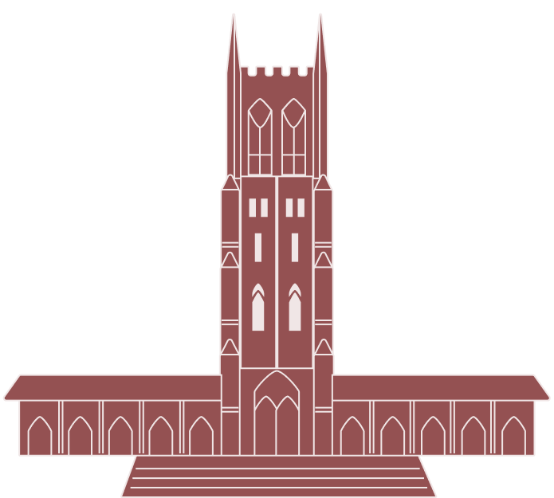

Experience
April 2019 - present
Product Design Consultant at Levvel
- Product designer responsible for product strategy, user experience design, visual design, information architecture design, market research, prototyping, and user testing for clients.
- Facilitated product workshops and user interviews to gain insight about business problems and user needs.
- Utilized Figma or Sketch/Invision/Abstract to build high-fidelity, interactive prototypes to demonstrate solutions.
- Collaborated with frontend engineers in order to produce functional front end components that precisely align with the mockups.
- Developed and styled pixel-perfect UI components and pages, using React/LESS and Angular/SASS.
- Planned and lead regular design reviews with key client stakeholders.
- Trusted with full ownership of efforts to completely redesign key features.
July 2018 - March 2019
Associate Design Consultant at Levvel
- Organized and conducted user interviews and research synthesis in order to better understand user needs and pain points.
- Developed and styled functional frontend components and pages using React, Angular, and SASS/LESS.
- Part of both the Design practice and Engineering practice, designing and implementing solutions that enable clients to transform their digital strategies.
- Learned and adapted quickly to different technology stacks in order to work with each new client.
- Provided client teams with deliverables and documentation, often prior to the deadline.
Summer 2017
Web Development Internship at Airtight Design in Atlanta, GA
- Developed and maintained the front end of client web applications based on UI mockups.
- Performed research on various topics such as application security, responsiveness, cross-browser testing, and accessibility.
- Wrote articles for the company blog, including an exploration of microsites.
August 2014 - May 2018
Duke University
- B.S. in Computer Science
- Minor in Visual Media Studies
Education
Duke University Graduated May 2018
B.S. in Computer Science
Minor in Visual Media Studies
Summer 2017
Web Development Internship at Airtight Design in Atlanta, GA
- Developed and maintained the front end of client web applications based on UI mockups.
- Performed research on various topics such as application security, responsiveness, cross-browser testing, and accessibility.
- Wrote articles for the company blog, including an exploration of microsites.
Fall 2015 - Fall 2016
Teaching Assistant for ‘Introduction to Computer Science’ course
- Assisted students to gain a deep understanding of the syntax and uses of Python.
- Communicated the fundamentals of algorithms and software design to students.
- Led group tutoring sessions to help students learn the concepts and succeed in the course.
- Helped the professor grade assignments and exams in a timely manner
Summer 2016
Google RISE Summer Teaching Assistant at Georgia Institute of Technology
- Taught under-represented high school students basics of Java syntax, algorithm design, and the fundamentals topics of computer science to prepare them for the AP Computer Science course and exam.
- Designed and led creative activities that helped the students understand the topics of the AP exam.